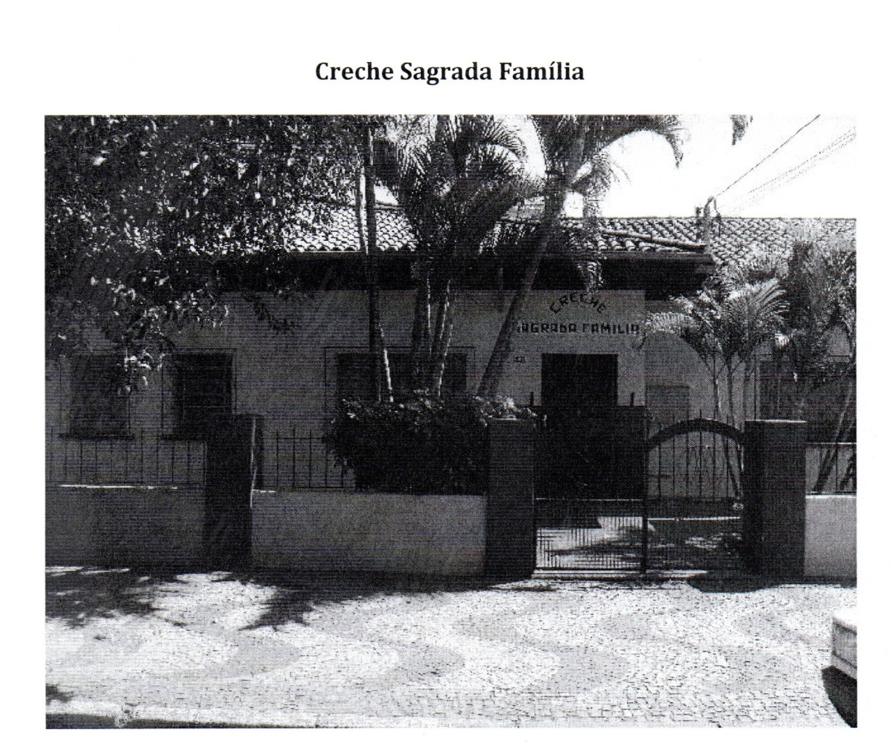

História
Uma história especial, iniciando a partir das necessidades das mães trabalhadoras, que não tinham com quem deixar seus filhos. Em 1961, Madre Eduarda saiu de casa em casa, de comércio em comércio, de sítio em sítio, pedindo auxílio para a construção. Corajosamente deu início a construção do prédio, que foi inaugurada em 28 de novembro de 1962. Tudo era muito pobre, todos os anos, no tempo da colheita as irmãs saiam pedindo nos sítios de Leme, cereais, frutos e tudo que fosse oferecido para alimentar as crianças. Em geral, as pessoas eram muito generosas e ofereciam muita coisa que tinham em casa.
Desde o início, a Creche abria as portas às 04h30min. As crianças chegavam ainda dormindo com as fraldas da noite. Necessitavam de banho, roupa limpa, agasalho, alimento e um berço ou caminha para continuar o sono interrompido.
As mães embarcavam nos caminhões a caminho dos canaviais e só voltavam a noite, exaustas. As crianças eram filhos da creche, onde passavam a maior parte dos seus dias. Irmãs e funcionários davam o melhor de si para compensar a ausência dos pais. Irmã Maria Ludwigis Bilo foi o esteio que sustentou a Creche Sagrada Família durante cinquenta anos, passando por situações difíceis, sem nunca esmorecer, executando com funcionários todos os trabalhos necessários: cozinha, lavanderia, horta, limpeza, cuidado das crianças, trabalhando de doze a quinze horas por dia.
Outras irmãs durante todos estes anos, doaram seu trabalho na creche, tornaram as mães das crianças, encheram-se de carinho pelos peque-nos, tentando substituir as mães trabalhadoras dos canaviais e algodoeiras
Além do cuidado das crianças, ainda precisavam levar as crianças à escola e buscá-los à tarde. Até que a prefeitura implantou nas dependências da Creche, a educação infantil e mais tarde as séries iniciais.
Em 2014, com uma nova proposta de educação as irmãs solicitam à Secretaria de Educação entregar os espaços cedidos à mesma para que a própria Congregação coordene as Etapas da Educação Infantil e a implantação das séries iniciais do Ensino Fundamental. A Sagrada Família passou a denominar-se Centro Educacional Sagrada Família.
Em função disto, começaram as exigências para adaptação do prédio à Educação, coisa que nunca sequer foi cogitado enquanto a educação era executada pela Secretaria de Educação Municipal, que custou enormes sacrifícios às irmãs. Sem executar as mínimas exigências impostas pelo governo municipal, recusaram a aprovação do Centro Educacional Sagrada Família que durante mais de cinquenta anos fez o trabalho que deveria ser executado pela Prefeitura. Finalmente em junho de 2016, todas as exigências foram executadas e veio à aprovação do Centro Educacional Sagrada Família. Implantamos o Ensino Fundamental I gradativo até completar o Fundamental II. Em 2022 iniciamos o Novo Ensino Médio, portando uma escola Filantrópica que oferece ensino do Berçário ao Ensino Médio. Nossa escola hoje é reconhecida como Colégio Sagrada Família.